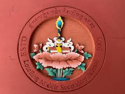

Education
Academic background and certificates

B.Ed in ICT — Samtse College of Education
2023 — PresentRelevant coursework: Web development, ICT pedagogy, computer networks.

High School — Yangchenphug Higher Secondary School
2020 — 2022Completed secondary education with focus on science and ICT.

Middle School — Loselling Middle Secondary School
2010 — 2019Built a foundation in core academic subjects and computer basics.